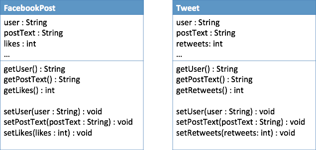
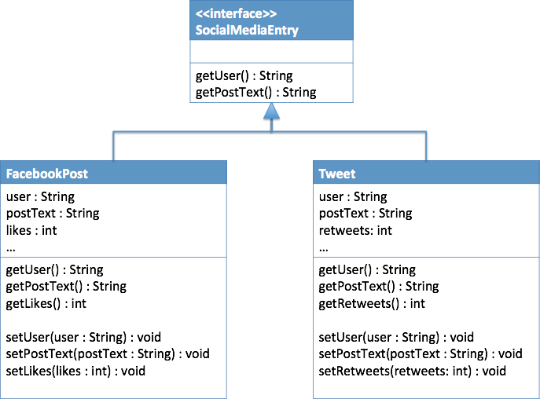

Team Activity - Design Patterns Practice 1
Introduction
As a team, consider the following scenario and identify the design pattern that would best apply. Then select that design pattern in the first I-Learn quiz. This will give you feedback about your choice, and make sure we have all decided on the same pattern, before continuing on.
Once you have identified the pattern to use, you will then need to clone the GitHub repository with the sample code from which to start. As a team, you will then need to modify this code to apply the design principle.
Scenario
Consider an application that is used to analyze social media data. You want to create objects representing Facebook posts as well as Tweets on Twitter. Among other potential data members, you develop the following classes:
Recognizing that these two kinds of status messages are very similar, you decide to create an interface for Social media entries, so that you can use either one in your analysis classes. The interface could look as follows:
Then, you decide to write a DataAnalyzer class that accepts as a paramater a list of objects that implement the SocialMediaEntry interface.
This process works great and you begin doing analysis on these two types of social media. Later on, you decide that YouTube videos may also have interesting data that could be analyzed using your same DataAnalyzer class. You download the YouTube API classes from Google, and find that you have a class that has an author, a title and a description. For the purposes of your analysis you decide that combining the title and the description of the video is similar enough to work as the text for your analysis. The problem is that you cannot modify the YouTube class code, but you also don't want to modify your interface and all the code that uses it. Thus you are left trying to find a way to make the following three types work together:

Please answer the first quiz question before proceeding.
After determining the design pattern to apply, please apply this pattern to sample code that contains all the classes and interfaces mentioned above. This is a NetBeans project that is found at: https://github.com/sburton42/SocialMediaDesignPattern
Please clone that project and add your code to make the solution work with YouTube videos. Make sure that you do not edit the YouTubeVideo class or the SocialMediaEntry interface. When finished, please commit your code to a new public repository at GitHub and upload the link in the following I-Learn assessment. You only need to have one GitHub repository for your team, but each person should fill out the assessment.